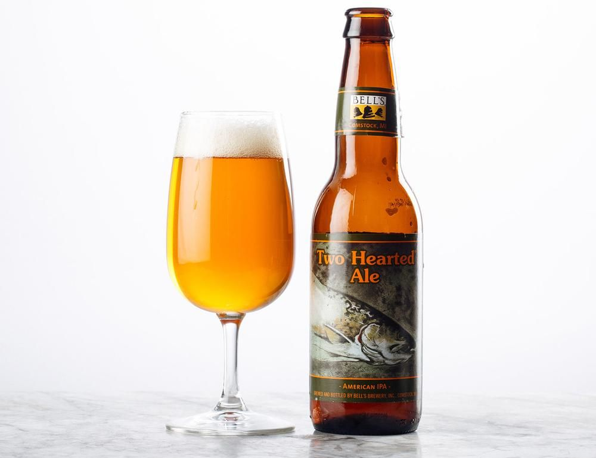

Named after fishing waters in Michigan’s Upper Peninsula, Two Hearted is an American IPA brewed
and dry hopped with 100% Centennial hops. Beloved by longtime and new craft beer
drinkers, Two Hearted is an iconic ale that’s perfect for any occasion.
American IPA
%
Tulip?
